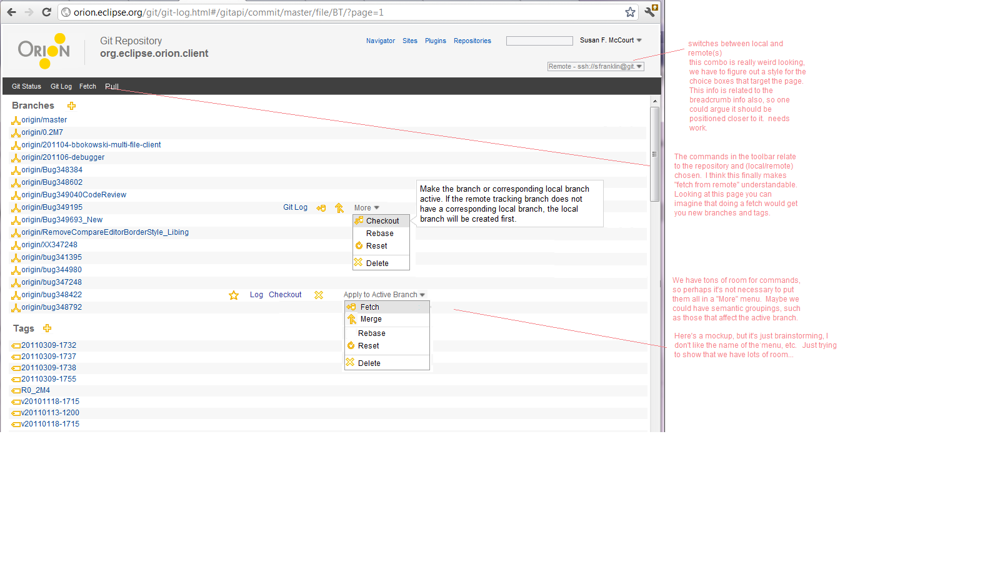

<map name="map">
	<area shape="rect" coords="17,135,81,158" href="git-status.html"/>
	<area shape="rect" coords="80,136,129,154" href="git-log.html"/>
  	<area shape="rect" coords="455,333,506,350" href="git-log.html"/>
  	<area shape="rect" coords="726,59,800,79" href="git-clone.html"/>
</map>